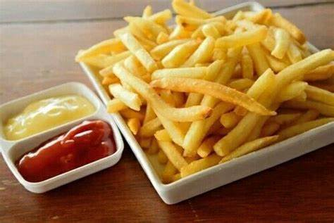

Papas Fritas
Receta para papas fritas caseras

Ingredientes
3 o 4 papas
Aceite
Sal
Elaboracion (pasos)
Pelar las papas
Cortarlas en bastón
Calentar aceite en una sartén
Cocinar hasta que estén doradas
Removerlas del aceite y salar a gusto